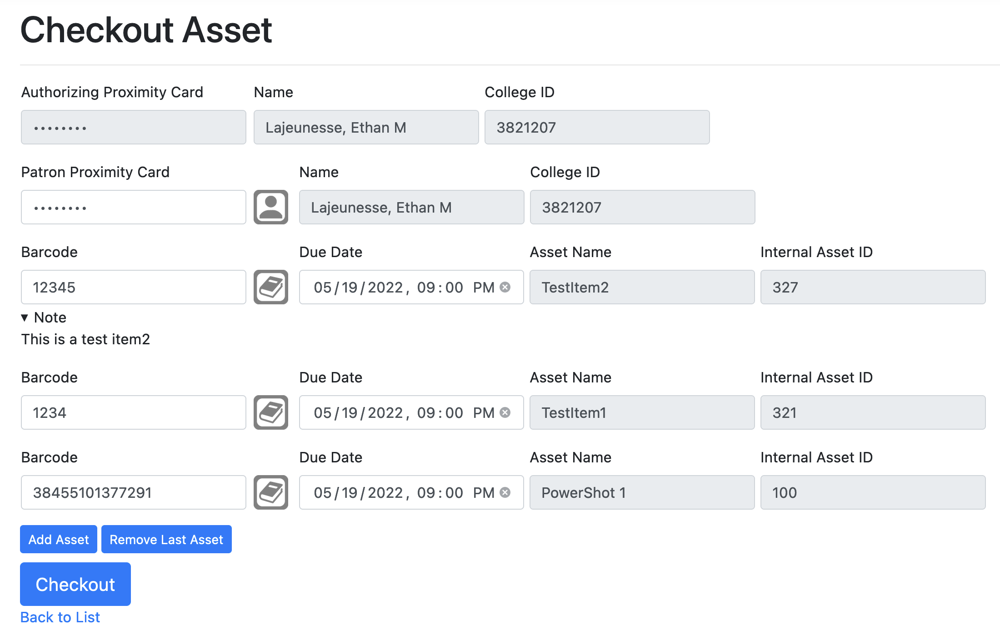
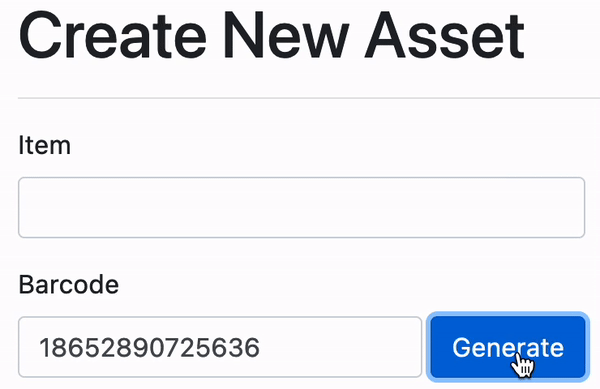
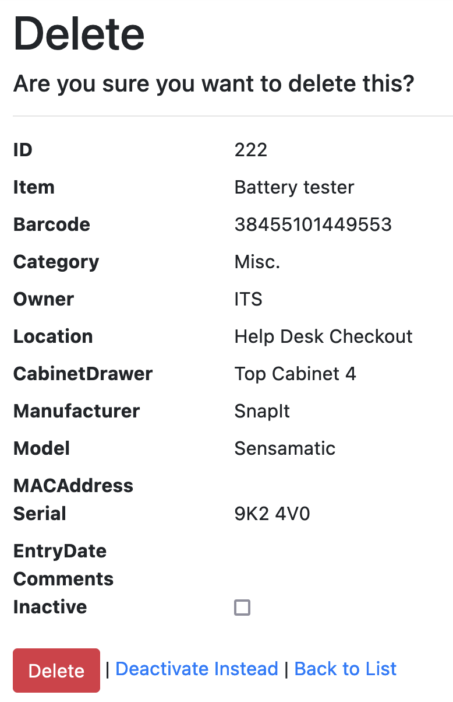
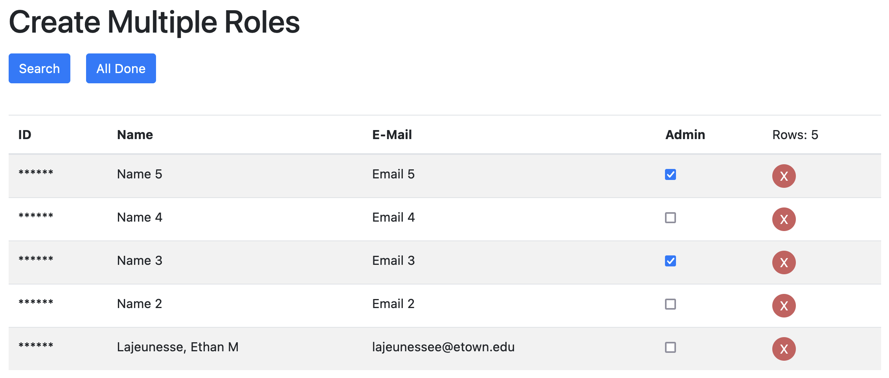
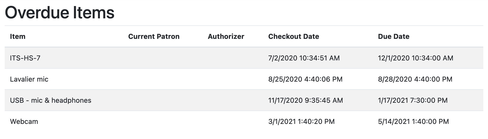
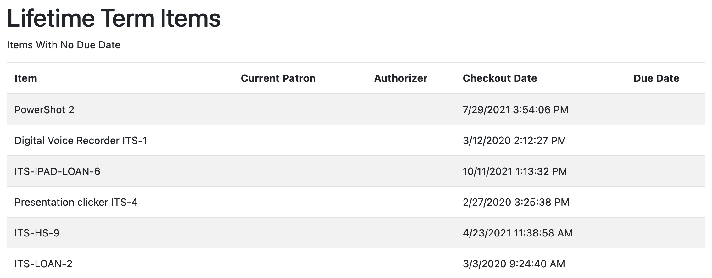

The Checkout System is an ASP.NET Core Web App MVC using Entity Framework.
I was tasked with getting the initially broken system up and running
and adding more features that were requested by the client.
The system is mainly ran on a touchscreen computer that has a 2D barcode
and prox ID card scanners connected to it. Each asset should have a
2D barcode attached to it that a user can scan to check it in/out.
Throughout this project I gained experience in:
- C#
- JavaScript
- HTML & CSS
- SQL & SQL Servers
- ASP.NET Core
- .NET 5
- MVC Models
- Entity Core Framework
- Active Directory
- Subversion Client - TortoiseSVN
- FTP Server Publishing
- Cookies
Selected Additions & Fixes:
- Checking In & Out Assets:
-
Enabled fields only once the previous ones have been filled out.
-
Added an authorizing user field to record which staff member checked in and out an item.
-
Showing comments for assets that have comments stored in the Assets table
-
Added the ability to check-in and checkout multiple items at a time.

- Creating Assets:
-
Implemented a random barcode generator onto the creation form.

- Deleting/Disabling Assets:
-
Added the ability to delete and disable assets.

- Role Management:
-
Added the ability to add admins and non-admins into the Roles database.
-
Ensured that only admins are able to manage assets and roles,
and non-admins are only able to authorize checkout/checkin transactions.

- Inventory:
-
Created a way to scan all items to ensure that assets are not missing or lost.

-
This included generating a report at the end that is able to be reviewed by a supervisor.

-
Reports:
-
Overdue Report

-
Lifetime Loan Report

-
Asset Checkout Frequency Report